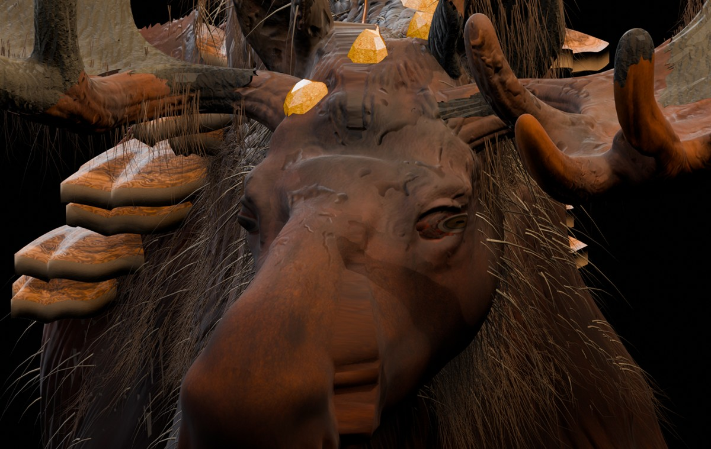

Лесной лось. Исправление глаз.
Три настоящих рендера Blender с существующей 3D-модели V30G. Оба глаза перенесены в исходные боковые глазницы, зрачки имеют горизонтальную форму. Переключайте ракурсы ниже; нажмите на изображение, чтобы открыть его в полном размере.

ГеометрияНастоящий 3D-меш, не концепт
ЗрачокГоризонтальный, тёмный
МатериалыИсходный PBR сохранён
Управление: стрелки ← → на клавиатуре. Рендеры показывают работу новой геометрии в сцене Blender. Это галерея ракурсов, а не полноценный вращаемый WebGL-просмотр. Импорт и анимации в Unreal Engine пока не проверены; AAAA-финал ещё не утверждён.